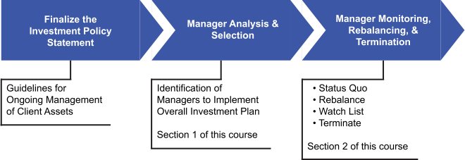

To keep the proper context within the overall asset management process, manager monitoring and selection are just a part of the range of requirements when implementing an investment plan for a client. Review the following to ensure you have context for where this portion of training fits relative to the full scope of the process. Click on each icon for more detail.
--Insert Image and Tooltips--
=======To keep the proper context within the overall asset management process, manager monitoring and selection are just a part of the range of requirements when implementing an investment plan for a client. Review the following to ensure you have context for where this portion of training fits relative to the full scope of the process. Click on each icon for more detail.

>>>>>>> master